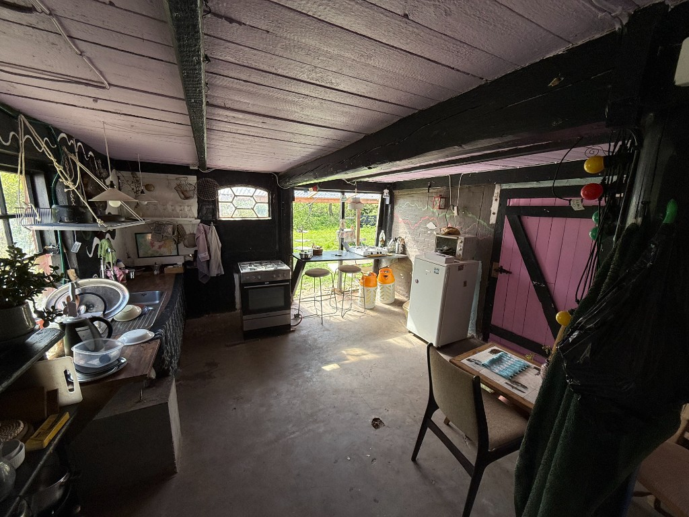

Kobbegaards fælles faciliteter er åbne for alle overnattende gæster.
Her finder du fælleskøkken, fællestoiletter og badefaciliteter samt fællesarealet Balladen. Balladen fungerer som gårdens samlingssted med siddepladser, et lille bibliotek med ældre bøger samt genstande og installationer fra de mange arrangementer, der gennem årene har fundet sted på Kobbegaard.
Rummet bruges både til afslapning i hverdagen og som en del af gårdens arrangementer. I sommerperioden åbnes de store maskinporte ud mod Kobbevej, og Balladen danner ofte ramme om pop-up-butikker, café og andre aktiviteter.

